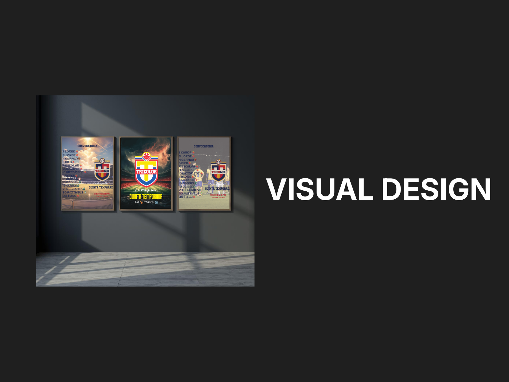
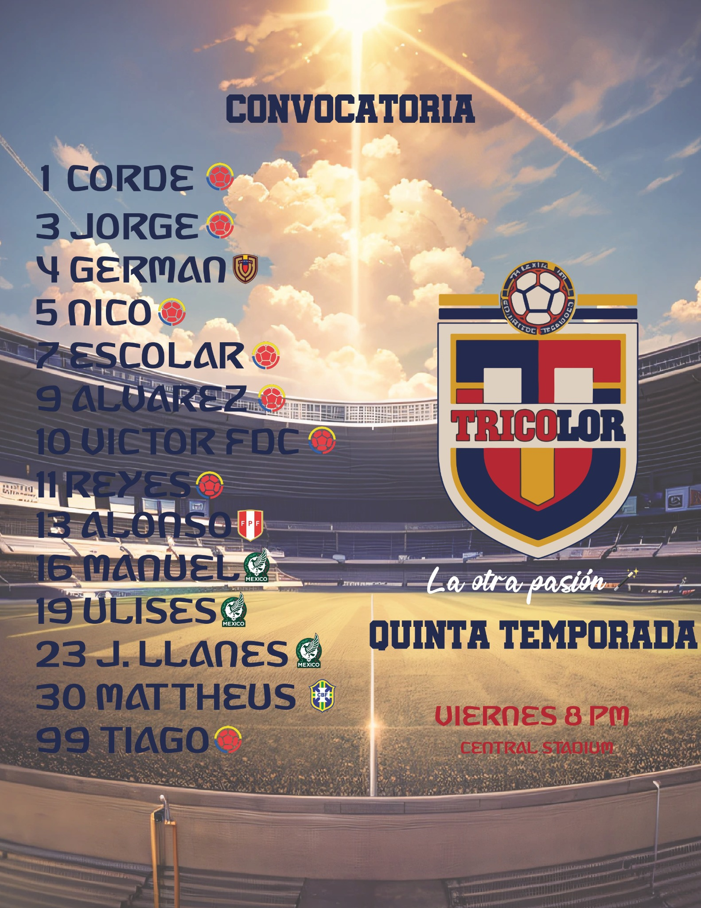
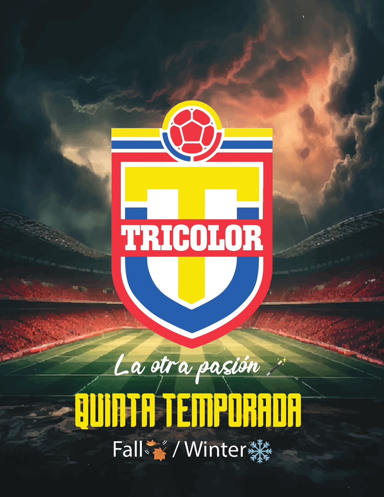
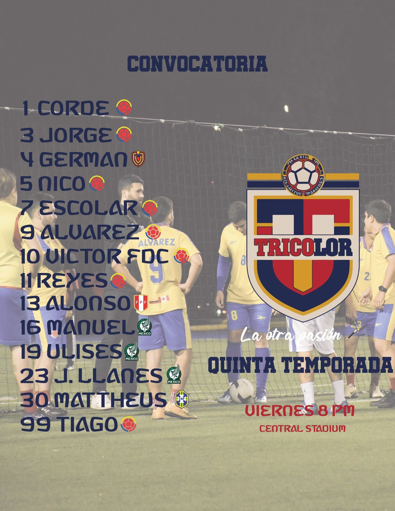

← Back to selected work
Visual Design
Tricolor Poster Series
Visual designer for a social poster series supporting an amateur football team’s fifth season.

A sports poster series built around energy and identity.
The series was created for an amateur football team and uses strong typography, team colors, player information and dynamic stadium imagery to create a recognizable visual language.
Poster series



Design focus
Hierarchy, contrast and consistent brand elements were used to keep a unified campaign look while allowing variation between posts.